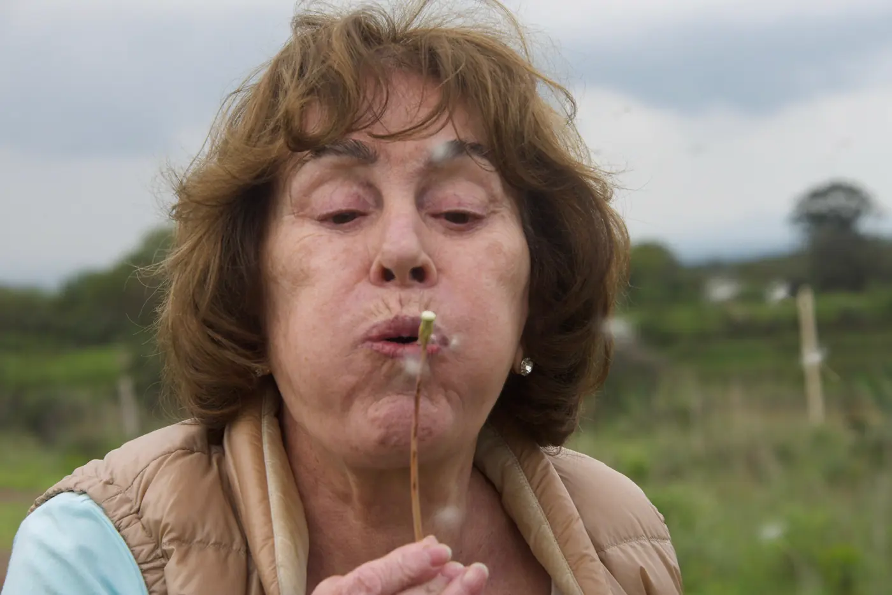

Marilú soplando un diente de león
Archivo de la familia
María Luz
Galindo Rodríguez
Marilú
- Nació
- 21 de enero de 1949Ciudad de México
- Falleció
- 1 de julio de 2026Ciudad de México
- Fue
- Ciudadana del mundo
Colección de 143 fotografías reunida por su familia y sus amigas. Sigue abierta.
– velitas encendidas
Su vida
Lo que se sabe con fecha. Cualquiera puede añadir un momento y queda en su sitio, en el año que le toca.
La cronología termina aquí porque todavía nadie ha escrito el resto. Si te acuerdas de un año, de un viaje, de una mudanza, ponlo.
Cómo quieres ver el álbum
Pícale al álbum para pausar · las flechas del teclado pasan la hoja a mano
El álbum
Van pasando conforme bajas. Tú llevas el paso.
Archivo de la familia
Cada fotografía que pasa se queda abajo, en la hoja de contactos. Pícale a cualquiera y se vuelve un pase automático de las 190.
Lo que dejó en cada quien
Todavía no hay nada escrito aquí. El primero que escriba deja el tono para todos los demás.
Su cocina y sus lugares
Lo que se puede volver a hacer y los sitios a los que se puede volver. Es la parte de ella que todavía se usa.
¿Guardas una receta suya, escrita a mano o de memoria? ¿Hay un lugar que te la recuerda?
Las canciones que la hacían bailar
Vota por las que de verdad le gustaban. Las más queridas suben.
Añadir un lugar suyo
so beat it
Ella tiene la última palabra